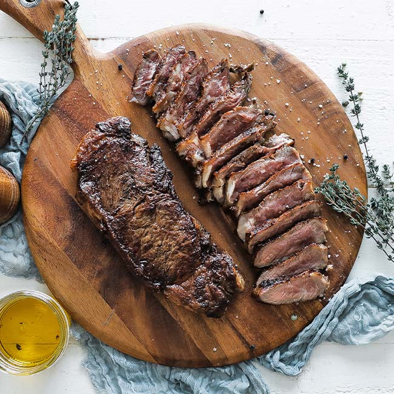

Steak

A sizzling hot, juicy & tender cut of beef steak.
A quintessential dinner entree, beef steak is dish loved by many, apt for formal dining and familiar gatherings alike.
With many different ways to prepare it, there is a steak for all kinds of palates. This recipe, however, will yeild a classic 'steakhouse-style' medium-rare cut; serves one.
Ingredients:
- 1 ribeye, t-bone, or sirloin steak (1.5-2" thick)
- 2 tbsp high smoke point oil
- 4 tbsp unsalted butter
- 2 cloves garlic left in skins
- 1 bunch of fresh thyme
- Kosher salt
- Black pepper
Steps:
- Bring steak to room temperature
- Pour oil onto a cast iron skillet and heat to just below the oil smoking point
- While the skillet is heating, season the steak generously with salt and pepper on both sides
- Place steak on hot skillet and sear for 2-3 minutes on either side
- Add the butter, lightly crushed garlic cloves, and thyme to skillet
- Tilt the skillet and baste the steak with the butter until it reaches the internal temperature for desired doneness (135°F for medium rare)
- Once the steak reaches the desired doneness, immediately remove the steak from the pan onto a cutting board
- Immediately after, pour the butter with garlic and thyme on steak, and let rest 5 minutes
- Serve with desired sides and enjoy